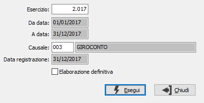

Generazione storno mancati incassi/pagamenti
La procedura permette di effettuare la generazione del giroconto contabile di storno dei conto di ricavo o di costo movimentati nell’anno a fronte di fatture non ancora incassate/pagate a fine anno.
L'accesso alla procedura è consentito solo se selezionata in configurazione contabilità speciali l'opzione "Gestione semplificata per cassa" con modalità sintetica.
Nel campo esercizio viene proposto l’esercizio in corso, non può essere indicato un esercizio precedente a quello impostato in configurazione. Nel campo causale viene proposta la causale indicata in configurazione, che deve essere una normale causale di giroconto, senza nessun movimento sulle partite. Nella data di registrazione viene impostata fissa la data di fine esercizio.
E’ prevista anche una elaborazione di prova che produce una stampa dei movimenti che saranno generati, mentre l’elaborazione definitiva produce la stampa dei movimenti generati.Nell’elaborazione sono inclusi i documenti aperti a fine anno che risultano da incassare/pagare e i documenti con effetti attivi che risultano da esitare a fine anno o che risultano insoluti, anche nell’anno successivo. Il movimento viene generato per i clienti girocontando i conti di ricavo presenti sulle registrazioni dei documenti di vendita al conto ricavi sospesi indicato in configurazione, in proporzione per l’importo da incassare. Mentre per i fornitori vengono girocontati i conti di costo presenti sulle registrazioni dei documenti di acquisto al conto costi sospesi indicato in configurazione, in proporzione per l’importo da pagare.
La generazione può essere effettuata una sola volta per esercizio ed aggiorna il flag sui protocolli contabili.
